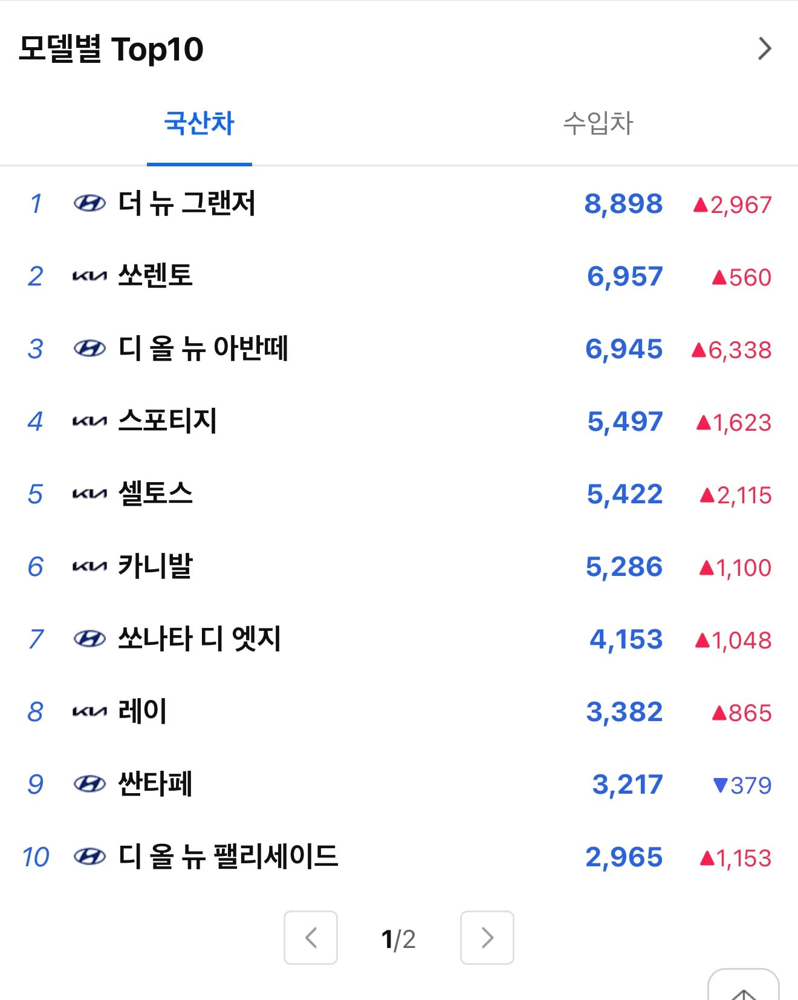
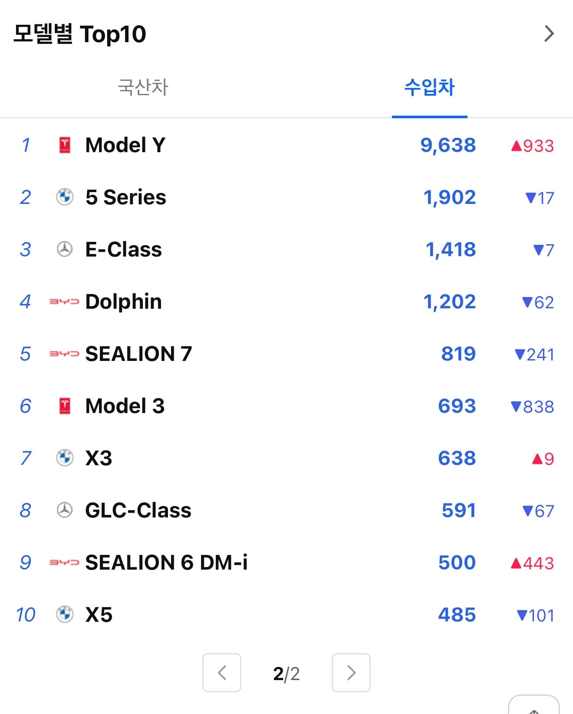

국산차

수입차

이젠 진짜 어딜가나 보이는 모델y가 통합 1위 굳건하게 유지중
가격논란많던 아반떼도 7천대가량 나름 선방함
국산차


이젠 진짜 어딜가나 보이는 모델y가 통합 1위 굳건하게 유지중
가격논란많던 아반떼도 7천대가량 나름 선방함
테슬라 이제 양카라인가??..
이미 ㅋㅋㅋ 양카라인 들어감.
아방이 가격 올랐어도 잘나가는구나 그랑죠는 6천됬고 쏘나타도 풀체인지 나오면 5천 찍겠지....
준중형 세단 대체재가없음
아반떼랑 비교할만한건 셀토스정도
아니면 쉐보레나 르노가야하고
그 밑으론 경차, 베뉴정도
ㅅㅂ 개방해서 경쟁시켜야지
가격 ㅈㄴ 올려도 잘 팔리잖아?
허리 꼿꼿하게 꺼드럭거릴 거 생각하니 기가차네
개방한다고 차값이 내릴거같냐? 트럼프 지랄나기전에 미국차 무관세였음. 그럼에도 딱히 싸게 팔진 않았음. 싼맛에 타다뒤질 중국차를 원함?
기아는 세단 빼고 잘나가네. ㅋㅋㅋ
와 테슬라 압도적이네
사실 저중에 제일 국밥사골곰국흐물흐물씨국물 쏘렌토가 놀라움 ㅋㅋㅋㅋㅋㅋㅋㅋ
byd 사는 사람 꽤있긴 하네ㄷㄷ 커뮤니티엔 역적취급 당하던데
비야디 돌핀은 고장만 안나면 안탈 이유도 없긴함
고장나면 씨발 답이없어서글치
확실히 국산차는 요새 suv 종류별로 많이 사는 추세네
뭔가 suv 비중이 많이 늘은듯
비싼차 개많이 팔리네ㄷㄷ 난 차 말고 집을 좋아해서 그런가 도저히 4~5천 주고 신차는 못뽑겠던데... 회사에 2~3년차들 끽해야 월급 400 정도 받을텐데 신형 테슬라 뽑는 거 보면 신기해.. 5천 정도 목돈이면 서울에 빌라라도 하나 사놓는게 낫지 않나 다들 돈 많어 부럽네~
나도 감가 쳐맞는게 너무너무 아까움... 신차는 못뽑을듯
닉부터 부티가 좔좔~ 실례지만 무슨 회사신데 2-3년차가 월 실수령 400인지 쇤네가 여쭤봐도 되겠씸깡?
아반떼는 진짜 지능문제인가 싶을정도임...
인터넷에서 비와이디 엄청 까는데
매출 순위권
들어온거보면 신기하네
현재 3등이고 bmw가 2등인데 턱 밑까지 쫓아와서 사실 몇달뒤면 2위까지는 사실 확정이라고 봐야지
점점 전기차 유저가 많아지네
충전시설 확충해야겠는데 ㅋㅋㅋ
내가 보기엔 BYD나 테슬라나 그게 그건데 ㅋㅋ
근데 BYD 진짜 서울 중심부에서도 가끔씩 돌아다니는 거 보임. 약간 업무용으로 막 굴리는 느낌이긴 하더라
쏘나타 많이 시들해졌네
모델y가 우리나라뿐 아니라 전 세계 베스트셀링카임. 이미 검증은 끝.
우리 토요타는 전멸했누 ㅠㅠ
누가 제발 알파드, 크라운, 캠리, 프리우스좀 사주세요 ㅠㅠ
알파드는 인기 개많지 않나? 대기기간 끝남?
대기는 항상 있는데 인기가 많다는 느낌 보다는 그냥 한국 토요타가 물량을 얼마 안들고와서 그런 편 같어
기아 승용차들은 조용히 죽었네
씨라이언이 생각보다 많이 팔리네 ㄷㄷ
씨라이언 그영상 안보고 산 사람들인건가 ㅋㅋㅋㅋ
국산차가 너무 비싸지니까
아반떼만 생각하려해도 그돈씨 모델Y 가능
이제 모델y가 국민차 된 듯
이거보고나서는 모델Y못살듯